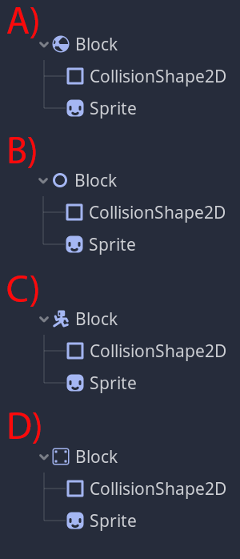

- Which of the following commands is used for output to the console?
- Console.Write('Hello World');
- Console.Output("Hello World");
- Console.RightLine("Hello World");
- Console.WriteLine("Hello World");
- Console.Print('Hello World');
- "Syntax" refers to:
- The category of software used to write code (eg: onlinegdb.com, Visual Studio, etc.)
- Adhering to correct order of operations.
- Control Flow: Structuring code to allow simple decisions to be made during a program's run-time.
- The rules of a language.
- Which of the following commands is used for String input from the console?
- Console.ReedLine();
- Console.ReadKey();
- Console.ReadLine();
- Console.Readline();
- Which one of the following operators is not like the other one?:
= + - * / %
- %
- =
- +
- /
- == < > <= >= == are all: __________________.
- boolean expressions
- ALU expressions
- assignment operators
- comparison operators
- Fill in the Blanks: "Compilation" is the process by which the compiler turns code written in __________ and creates a ___________ program.
- ascii / binary
- windows / linux
- decimal / binary
- binary / ascii
- You want to make an asterisk (*) flash on the screen a number of times. To display the asterisk a number of times, you would use the code:
Console.WriteLine("*");
Console.WriteLine("*");
Console.WriteLine("*");
Console.WriteLine("*");
Console.WriteLine("*");
What code would need to be added between each of the above lines to make flashing occur?
- Console.Clear();
System.Threading.Thread.Sleep(300);
- System.Threading.Thread.Sleep(300);
Console.Clear();
System.Threading.Thread.Sleep(300);
- System.Threading.Thread.Sleep(300);
Console.Clear();
- Console.Clear();
System.Threading.Thread.Sleep(300);
Console.Clear();
- You want to ask the user to enter their name. What variable data-type would you need to store this information?
- int
- string
- char
- double
- Assume you have the user's name stored in a variable called "name". To say hello to the user, which code would you use?
- Console.Writeline("Hello, " name);
- Console.Output("Hello, " + name);
- Console.WriteLine("Hello, " + name);
- Console.Writeline("Hello name");
- Which command jumps immediately to the (boolean expression) of a loop (like a do.. while loop), and evaluates it?
- continue;
- break;
- true;
- system();
- return;
- Which command jumps down to below a loop, exiting it?
- continue;
- break;
- true;
- system();
- exit();
- What is wrong with the following code?:
string password;
Console.Write("Enter your password:");
password = Convert.ToChar(Console.ReadLine());
if(password == "QWERTY"){
Console.WriteLine("ACCESS GRANTED.");
}
- Convert.ToChar is converting to the wrong data-type. Actually, no conversion is needed here.
- Replace the == with an single =
- "QWERTY" should be 'QWERTY'
- Replace the = with a double ==
- Fill in the blank: In the C# Math class, you wil find many differently named _______________________.
- methods
- loops
- conditional statements
- control flow expressions
- You write a program that asks the user to guess a whole number between 50 and 90 so that 50 ≤ num ≤ 95. What variable type would you need to store this number?
- int
- string
- char
- double
- Which of the following boolean expressions could be used as the condition in an if-statement to determine if a number stored in variable num is: 50 ≤ num ≤ 95 (greather than or equal to 50 and less than or equal to 95)?
- (50 <= num <= 95)
- (num >= 50 && num <= 95)
- (95 <= num <= 50)
- (num <= 50 && num >= 95)
- (num < 50 || num > 95)
- A program asks the user if they wish to repeat the program. The program stores the answer in a variable called "answer". Which loop below would repeat if the user types "yes"?
do{
}while(answer = "yes");
do{
}while (answer == "yes");
if (answer == "yes")
{
}
if (answer = "yes")
{
}
- What special character essentially presses 'Enter', starting a new line in a literal string?
- /n
- \n
- \\n
- Console.newLine();
- Which characters, besides newline, are considered special characters when printing ascii art?
- \ "
- / '
- " '
- \ /
- What is the output of the following code?
int x = -5;
do
{
Console.Write(x + " ");
x = x + 1;
}
while(x < 5);
- -5 -4 -3 -2 -1 0 1 2 3 4
- -4 -3 -2 -1 0 1 2 3 4 5
- x x x x x x x x x x
- it prints 10 spaces
- For what values of x will the following if/else-statement print "True"?
if(x < 0 || x == 2 || x == 4 || x == 6 || x == 8 || x > 10)
{
Console.WriteLine("False");
}
else
{
Console.WriteLine("True");
}
- any number less than zero, or any number greater than 10, or 2, 4, 6, or 8
- all odd numbers from 0 to 10
- all even numbers from 0 to 10
- this if statement will print “False” no matter what the value of x
- Assume this code is inside (at the top of) your program's Main method:
string name;
int x;
int age;
Later in the same program, the code: try{ } would most likely contain which of the following lines of code?:
Console.ReadKey();
name = Console.ReadLine();
x = 5.7;
age = Convert.ToInt32(Console.ReadLine());
- Which Class directly contains the definition for the method Abs()?
- Console
- Convert
- System
- Thread
- Convert
- In the code:
String n = "noob";
Console.Write("Hello " + n);
The + is used for:
- Concatenation
- Addition
- Threading
- Assignment
- Which of the following is equivalent to the second line of the following code?:
int i = 5;
i = i + 1;
- Convert.ToDouble(i % 1);
- i++;
- Math.Ceiling(i);
- i + 1 = i;
- In the following code:
double ans = Math.Pow(x,y)
x and y are being sent as _________________.
- parameters
- boolean expressions
- conditions
- syntax
- In the following code:
double ans = Math.Pow(x,y)
ans is:
- receiving parameters from Math.Pow
- being cast from Math.Pow
- being assigned a return value
- being evaluated for equality
The following 6 questions apply to the following code fragment. It shows a menu with three choices (1, 2 and 3). If the user enters one of the correct choices, it exits the loop. If the user enters a character instead of a number, it prints an error and then repeats the question. If the user enters a number that is not a valid choice, it prints an error and repeats the question. In the case of any invalid input, the program pauses for 2.5 seconds before the screen is cleared and the 3 options are displayed again.
int choice = 0;
do
{
try
{
Console.Write("Please choose (1) instructions (2) Play Game (3) Quit Game.: ");
_____(27)_____
Console.Write("\n");
}
catch
{
Console.WriteLine("You must enter a NUMBER!!!!");
_____(28)_____
_____(29)_____
_____(30)_____
}
if(_____(31)_____)
{
Console.WriteLine("Nope! Please choose a number between 1 and 3.");
_____(28)_____
_____(29)_____
_____(30)_____
}
_____(32)_____
}
while(true);
- What code is missing from the line marked _____(27)_____?
- Console.Read(choice);
- Console.ReadLine(choice);
- choice = Console.ReadLine();
- choice = Convert.ToInt32(Console.ReadLine());
- What code is missing from the two lines marked _____(28)_____?
- System.Threading.Thread.Sleep(2500);
- Console.Clear();
- System.ReadKey();
- System.ReadLine();
- What code is missing from the two lines marked _____(29)_____?
- System.Threading.Thread.Sleep(2500);
- Console.Clear();
- System.ReadKey();
- System.ReadLine();
- What code is missing from the two lines marked _____(30)_____?
- continue;
- break;
- Console.Write("\n");
- Console.Clear();
- What code is missing from the line marked _____(31)_____?
- choice > 1 && choice < 3
- choice > 1 || choice < 3
- choice < 1 && choice > 3
- choice < 1 || choice > 3
- What code is missing from the line marked _____(32)_____?
- break;
- continue;
- Console.ReadKey();
- Console.Clear();
The following 2 questions apply to the following code fragment. It tells a (terrible) knock-knock joke one line at a time (2.5 second pauses between each line of the joke), and then asks the user if they want to be told the same joke again. If the user types in a 'y' or 'Y', the joke is re-told after another 2.5 second pause. If the user types in any other letter, the program will close. This code has no error checking.
___(33)___ choice = 'y';
do
{
Console.WriteLine("Knock knock.")
_____(34)_____
Console.WriteLine("Who's there?")
_____(34)_____
Console.WriteLine("King Tut.")
_____(34)_____
Console.WriteLine("King Tut who??")
_____(34)_____
Console.WriteLine("King Tut-Key Fried Chicken!")
_____(34)_____
Console.Clear();
Console.Write("Would you like to hear that joke again?(y/n): ");
choice = Convert.toChar(Console.ReadLine());
_____(34)_____
Console.Clear();
if(choice == 'y' || choice == 'Y'){
continue;
}
break;
}
while(true);
- What code is missing from the line marked _____(33)_____?
- string
- int
- double
- char
- What code is missing from the lines marked _____(34)_____?
- Console.CLS;
- Console.Sleep(2500);
- System.Threading.Thread.Sleep(2500)
- Console.Clear();
Section 2 : Godot & GDscript:
- In C#, you might use the following code to create two integers and assign them values:
int x = 5;
int y = 2;
In gdscript, you're likely to code the equivalent with:
-
var x = 5;
var y = 2;
-
Vector2 x = (5,2);
-
x = (int)5
y = (int)2
-
var x = 5
var y = 2
- In C#, you might use the following code to evaluate the value of the integer age:
if(age > 40){
Console.WriteLine("You're old!");
}
In gdscript, you're likely to code the equivalent with:
-
if(age > 40):
print("You're old!");
-
if age > 40:
print("You're old!")
-
if age > 40{
print("You're old!")
}
-
if (age > 40){
print("You're old!");
}
- In gdscript we use indentation, where in C# we use ____________
- \t
- { }
- a semi-colon
- weak data-typing
- Which of the following (pictured below) would most appropriately be used to create a block that would never move (eg: a platform your character could jump up onto)?

- In Godot, a ______________ is best used to create a physical character object you can program to respond to arrow-key presses.
- RigidBody2D
- StaticBody2D
- TileMap
- KinematicBody2D
- Fill in the blanks, in order: In Godot, the ________________ function is used to move a ______________ object when provided a __________ parameter.
- Vector2() , StaticBody2D, double data-type
- lerp() , Area2D , iterated
- move_and_slide() , KinematicBody2D , Vector2
- _physics_process(delta) , RigidBody2D , constant